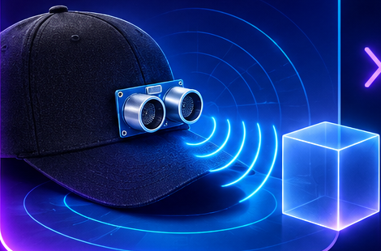
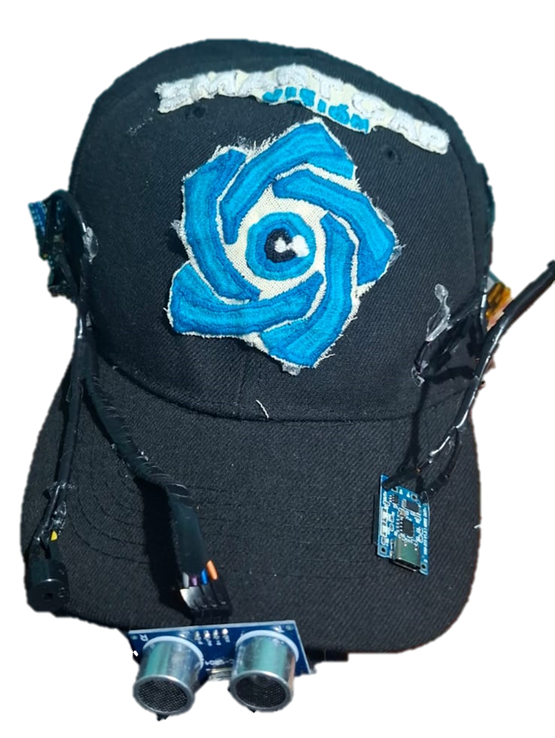
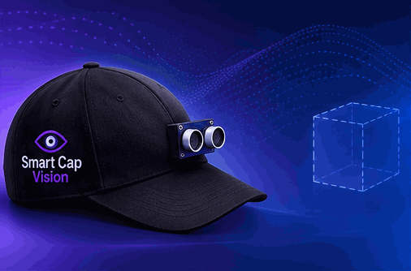
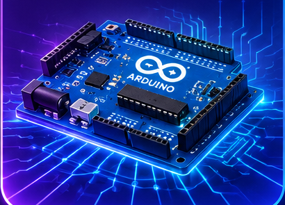
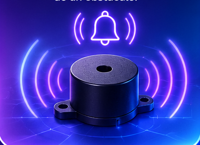
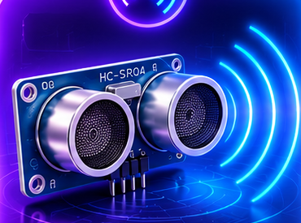
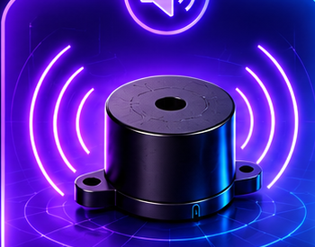
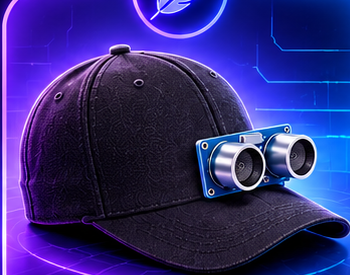
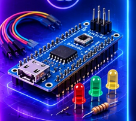
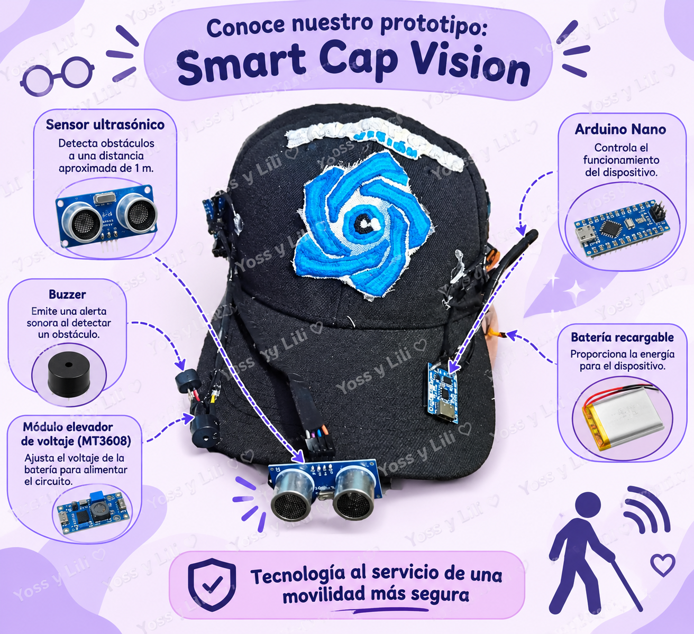

Detección
El sensor ultrasónico emite ondas sonoras hacia el entorno.
Smart Cap Vision es una gorra inteligente diseñada para detectar obstáculos elevados mediante un sensor ultrasónico y generar alertas sonoras.
Descubre el proyecto →
Smart Cap Vision es un prototipo tecnológico que busca complementar la movilidad de las personas con discapacidad visual, mediante la detección de obstáculos que pueden encontrarse a la altura de la cabeza.
Desarrollar una gorra inteligente que permita detectar obstáculos elevados mediante un sensor ultrasónico y generar alertas sonoras que ayuden al usuario a reconocer su presencia.
Este prototipo es una herramienta complementaria. No sustituye al bastón blanco ni a otros apoyos de movilidad.


El sensor ultrasónico emite ondas sonoras hacia el entorno.

El sistema recibe el eco y calcula la distancia del obstáculo.

El buzzer genera un sonido para advertir sobre la presencia de un obstáculo.

Detecta obstáculos mediante ondas sonoras.

Comunica la detección mediante un buzzer.

Integra sus componentes en una gorra.

Utiliza componentes electrónicos accesibles.
Conoce el desarrollo de nuestro prototipo y la integración de sus componentes electrónicos.

Un proyecto desarrollado con compromiso e innovación al servicio de la accesibilidad.